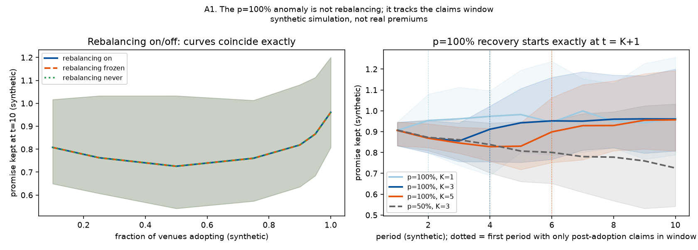
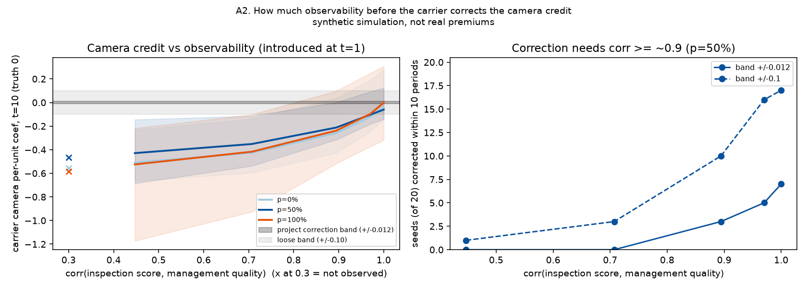
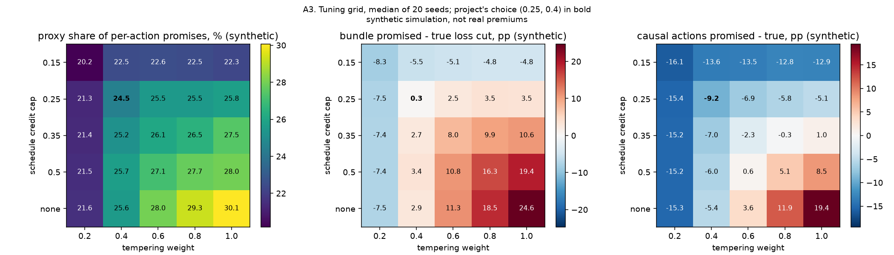

Research, 2026
Savings score stress test
A simulation of what happens when bars optimize toward a savings score of the kind insurance-tech vendors advertise.
01
What is simulated
This is not a claim about real premiums, carrier behavior, or any vendor's product. The simulation has 4,000 synthetic venues. Only the distributions of NYC DOHMH critical inspection violations and NYS SLA on-premises liquor licenses by ZIP are real. Every other feature, latent variable, premium, claim, loss, and adoption decision is generated.
A hidden management-quality variable affects both loss and observable proxies such as cameras and paperwork. A carrier fits a Tweedie GLM to observable features; a monotone gradient-boosting score estimates premium reductions from operational changes. Venues take their top three recommended actions, then the carrier refits over ten periods.
02
What the baseline showed
At the baseline setting, 24.5% [18.6, 36.2%] of summed action promises came from cameras and paperwork, which have zero true effect in the model. At 50% adoption, venues were promised a 27.2% reduction and realized 24.9% at period one; by period ten they realized 20.0% [17.2, 24.7%] while true loss fell 25.9%.
A high apparent recovery at full adoption was not evidence that the score became correct. At p = 100%, promise kept was 0.961 at period ten because the claims window had no unmoved venue-years left. The carrier re-learned a confounded training coefficient of about -1.54 against a true value of -0.60.
03
What survived the audit
The full-adoption recovery was not a rebalancing effect
Promise kept was identical across rebalancing modes to numerical precision. Across the 25-cell tuning grid, kept at p = 1 exceeded p = 0.5 by 0.10 to 0.40 in every seed. The audit attributes this to window composition and shared adoption targets.
Correction needed an almost direct management signal
At correlation 0.71, the camera coefficient remained -0.35 to -0.43 and only 3 of 20 seeds corrected within ten periods under the looser band. At about 0.97 correlation, 12 to 16 of 20 seeds corrected within ten periods depending on adoption.
Proxy attribution held, calibration did not
Across the cap and tempering grid, proxy actions made 20.2 to 30.1% of promised savings and the proxy-heavy versus causal-only gap remained 16.5 to 23.9 percentage points. Bundle calibration held only at the chosen tuning, with promised-minus-true gaps from -8.3 to +24.6 percentage points.
04, Audit figures
Stress-tested claims, not product performance.



700
stress runs in the complete study
20
seeds per reported sweep
20-30%
proxy share of action promises across the tuning grid
0.69
baseline Spearman score to true loss-cut ranking